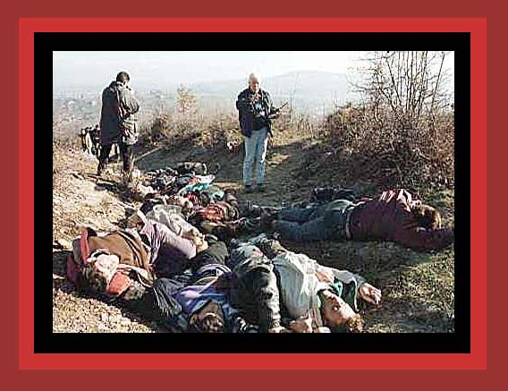

| Here a count is being made of the bodies of as many as 40 men, many mutilated, that were found on a hillside in the village of Racak in January 1999, after Serb forces attacked ethnic Albanian villages. Source: "Photographic Evidence of Kosovo. (AP Photo/Visar Kryeziu) Genocide and Conflict" |